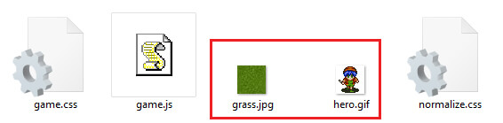
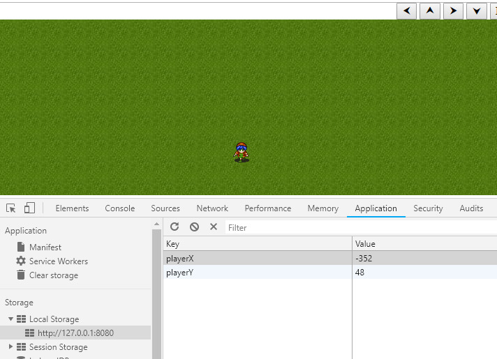

Howdy devs!
Recently I’ve been exploring several things about Front-end and Gamedev. One of them was a recent experiment I did with window.localStorage.
Mas o que consiste no window.localStorage?
As the Mozilla says, it is a read-only property that allows access to Storage object from origin page.
This allows to memorize information without losing them to page reloading, similar to cookies and sessionStorage features.
As advantages, localStorage…
- storage limit of 5MB, much higher than that of Cookies, 4KB;
- does not depend on HTTP requests, which reduces client-server demand
- has no expiration time as sessionStorage and Cookies (when configured for this)
- can be deleted while cleaning the browser’s storage.
However, they are more restricted due to only be used in local storage and in same-origin documents, that is, on the same page.
The latter reason is a good for single page applications to use, but not for other applications that depend on the server for browsing pages of the site for example.
Practical Application
Going back to that experiment, it is a simple demonstration that emphasizes the use of localStorage and also the application of videogame concepts, with character movement through the screen and UI. I see this as a more dynamic way of putting learning into practice.
After having a brief knowledge about the localStorage, I did a research to acquire assets (graphics for backgrounds, textures, animations, etc) for sceneries and character of the game. I some of sites like Opengameart and Spriters Resource. At that point, I already had at least one “scenery” and “character” to go on. The use of the localStorage here will be to save the position of the player on the screen, through its X and Y coordinates.

Directory structures:
- Assets: css, js, imagens, etc files;
- Raiz: onde irá o index.html;
HTML: the “skeleton”
Initially, I did an HTML structure to render the elements (scenery, character, interface) on the screen, giving them recognizable classes and ids to work easier through CSS and JS later.
<center>
<form>
<fieldset class="ui">
<div class="controls">
<button class="controls__btn" id="btn_left" type="button">⮜</button>
<button class="controls__btn" id="btn_up" type="button">⮝</button>
<button class="controls__btn" id="btn_right" type="button">⮞</button>
<button class="controls__btn" id="btn_down" type="button">⮟</button>
<button class="controls__btn" id="btn_reset" type="button">Reset Game</button>
</div>
</fieldset>
<fieldset class="screen">
<div class="map">
<div class="player" id="player1"></div>
</div>
</fieldset>
</form>
</center>
For the game screen there is the .screen element, which nests the .map element for the scenery and the #player element for player. The interface is in the .ui element, which nests the .controls, for the command buttons to interact with the player.
Looks empty? Blame it to CSS!
CSS: styles and customization
To give more personality to these elements, some CSS rules will be used, which will be useful to give colors, sizes, positions, effects and textures to them. I preferred to use an external CSS file (assets / game.css) for better organization.
body,* {
box-sizing: border-box;
}
fieldset {
margin: 0;
padding:0;
border:0;
}
fieldset.screen {
width: 100%;
height: calc(100vh - 28.4px);
}
fieldset.screen .map{
background-image: url(/assets/grass.jpg);
background-position: center center;
width: 100%;
height: 100%;
position:relative;
overflow:hidden;
}
fieldset.screen .map .player{
background-image: url(../assets/hero.gif);
width:32px;
height:32px;
top:50%;
left:50%;
position:absolute;
}
I strongly recommend incorporating normalize.css before this CSS for better results, like eliminating unnecessary standards like margins.
On this way, inside the <head> tag we put:
<link rel="stylesheet" href="assets/normalize.css"/>
<link rel="stylesheet" href="assets/game.css"/>
Better! So, let’s make the magic to work!
Javascript: variables, functions, engine, etc
Now the adventure really begins. Using the javascript game.js file, within the assets / directory, you will create the business rules and finally use the localStorage for the project. Thus, we declare in the HTML, at the end of the <body> tag the game.js call:
<script src="assets/game.js"></script>
We begin by declaring the variables used throughout the process.
//instancing the DOM elements
const player = document.querySelector('#player1');
const btnLeft = document.querySelector('#btn_left');
const btnUp = document.querySelector('#btn_up');
const btnRight = document.querySelector('#btn_right');
const btnDown = document.querySelector('#btn_down');
const btnReset = document.querySelector('#btn_reset');
//auxiliary vars, such as coordinates, player speed, player size
let _xx = 0;
let _yy = 0;
let xx = 0;
let yy = 0;
let spd = 16;
let playerSize = 32;
//bounding vars for the map
let mapWidth = document.querySelector('.map').offsetWidth;
let mapHeight = document.querySelector('.map').offsetHeight;
//bounding vars for the player movement, in order to keep it inside the map
const minX = -mapWidth/2;
const minY = -mapHeight/2;
const maxX = mapWidth/2-playerSize;
const maxY = mapHeight/2-playerSize;
The localStorage object will be mandatory and cannot be forgotten to be declared.
//localstorage instance myStorage = window.localStorage;
The savePos function, will be essential for feeding the localStorage vars playerX e playerY.
//function for setting the vars from LocalStorage as player x,y coordinates
function savePos(storage,x,y){
storage.setItem('playerX',x);
storage.setItem('playerY',y);
}
The function movePlayer works for move the character across the screen according the direction given (using angular units), then updates its position on the screen, and calls savePos function for save the coordinates on localStorage.
//character movement function
function movePlayer(_player,x,y,dir){
//updates the character coordinates within the map bounds
switch(dir){
case 0: if (xx<maxX) xx += spd; else xx=maxX; break;
case 90: if (yy>minY) yy -= spd; else yy=minY; break;
case 180: if (xx>minX) xx -= spd; else xx=minX; break;
case 270: if (yy<maxY) yy += spd; else yy=maxY; break;
}
//inline css for displaying the character on screen, regarding its coordinates, on a responsive way
player.setAttribute('style', 'left:calc(50% + '+x+'px) !important;top:calc(50% + '+y+'px) !important;');
//after moving the player, calls the savePos function
savePos(myStorage,x,y);
}
With the declared variables and functions created, the business rules for project execution begin. There, we first check if local storage is supported using (if (typeof (Storage)! == “undefined”)); we confirm the existence of the variables of it playerX and playerY and afterall we get ties of communication with the command buttons DOM elements through the addEventListener to command the player.
//checks if there is localstorage support
if(typeof(Storage) !== "undefined") {
//loads the localStorage vars when inits
_xx = parseInt(myStorage.getItem('playerX'));
_yy = parseInt(myStorage.getItem('playerY'));
if (myStorage.playerX === undefined) _xx=0;
if (myStorage.playerX === undefined) _yy=0;
xx = _xx;
yy = _yy;
movePlayer(player,xx,yy);
//click listeners + movement
btnLeft.addEventListener("click", function(){
movePlayer(player,xx,yy,180);
});
btnUp.addEventListener("click", function(){
movePlayer(player,xx,yy,90);
});
btnRight.addEventListener("click", function(){
movePlayer(player,xx,yy,0);
});
btnDown.addEventListener("click", function(){
movePlayer(player,xx,yy,270);
});
//botão de reset do localStorage, limpa as variáveis usadas
btnReset.addEventListener("click", function(){
xx=0;
yy=0;
myStorage.clear();
movePlayer(player,xx,yy,270);
});
} else {
// error msg
console.log('Sem suporte a web storage')
}
As bonus, keyboard keys movement, thanks to this Stack Overflow thread.
document.onkeydown = checkKey;
function checkKey(e) {
e = e || window.event;
if (e.keyCode == '38') {
// up arrow
movePlayer(player,xx,yy,90);
}
else if (e.keyCode == '40') {
// down arrow
movePlayer(player,xx,yy,270);
}
else if (e.keyCode == '37') {
// left arrow
movePlayer(player,xx,yy,180);
}
else if (e.keyCode == '39') {
// right arrow
movePlayer(player,xx,yy,0);
}
}
For running, you can use the NPM http-serve (saiba mais), or uploading on a HTTP server.
After this implementation, while running on the browser, we can consult the localStorage via browser’s inspector tools. On Chrome, for instance, via Application > Storage > Local Storage, we are able to see the vars there.

As vars, we see playerX and playerY being stored each step the player goes on X e Y coordinates. And after refreshing the page, the player will be displayed at the same last position.
Check the DEMO on Codepen (no textures).
Conclusion
The localStorage, even being restricted to a source, has a generous storage and permanence in the browser without expiration.
This can be very useful, as I said earlier, for Single Page Applications, such as web applications and browser games,for storing browser data more quickly and accurately.
The code can be taken via Gitlab repository:
https://gitlab.com/bcs9000/js-local-storage